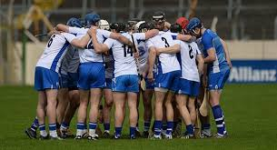
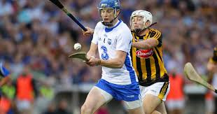

Hurling
|  |  |

|
Without a doubt, hurling was my first love in the sporting world.
Whether it be playing it myself amongst my school friends or cheering on my county team in Croke Park (not that they got there often...),
I was a devote follower of the game.